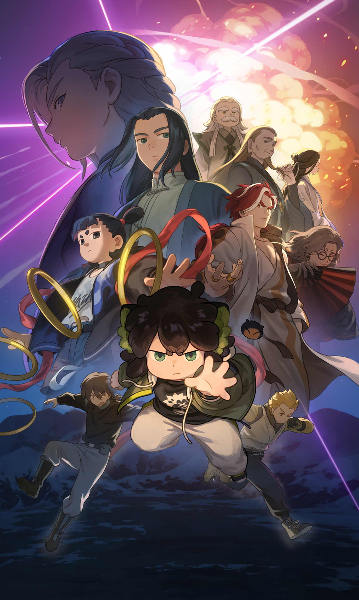

師弟の運命を揺さぶる突然の試練
真実を求めて新たな冒険が始まる
あらゆる世代を魅了した冒険ファンタジーがさらなる進化を遂げて帰ってくる。
前作で、心を交わしたシャオヘイとムゲンのその後が描かれる『羅小黒戦記２』が、日本語吹替版＆字幕版で同時公開決定！
日本語吹替版では、黒猫の妖精・シャオヘイを花澤香菜、
人間でありながら最強の執行人・ムゲンを宮野真守が演じるなど実力派キャストが集結。
愛おしいキャラクターたち、疾走感のあるアクションとストーリー展開、
すべてが一体となった心温まる冒険ファンタジー「羅小黒戦記２」。
シャオヘイは新たな冒険の果てにどんな未来を選ぶのか—— 。